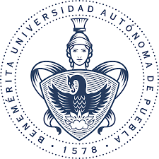
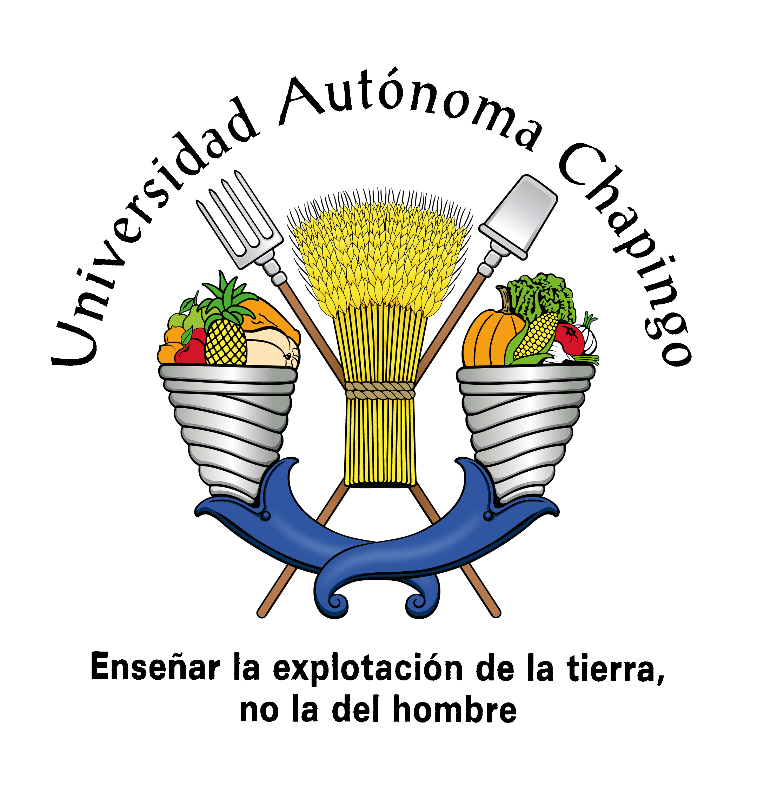
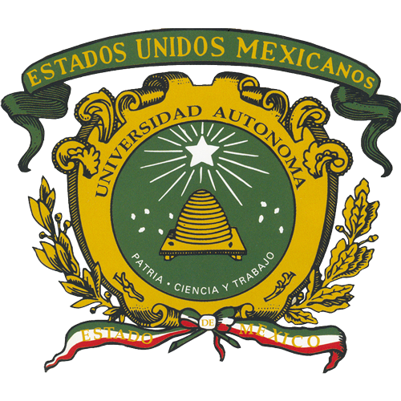

La Universidad de tus Sueños
A un Paso
En Testix te ayudamos a practicar para acceder a esa universidad de tus sueños, nuestro objetivo siempre sera prepararte para tu examen de admision y poder destacar.
En Testix te ayudamos a practicar para acceder a esa universidad de tus sueños, nuestro objetivo siempre sera prepararte para tu examen de admision y poder destacar.
TESTIX es una plataforma que surge como propuesta para ayudar a los estudiantes a prepararse para sus exámenes de admisión y acceder a las mejores universidades, surge como una propuesta diseña por estudiantes para estudiantes, con el objetivo de brindar una experiencia completa y personalizada .
La Técnica al Servicio de la Patria
El Instituto Politécnico Nacional (IPN), conocido coloquialmente como "El Poli", es una de las instituciones educativas y de investigación más importantes de México, líder en la formación de profesionales en áreas tecnológicas, científicas y administrativas
Por mi raza hablará el espíritu
La Universidad Nacional Autónoma de México (UNAM) es la institución educativa más grande e importante de México y una de las más reconocidas en Iberoamérica. Es el principal motor de investigación y cultura del país

Pensar bien para vivir mejor
La Benemérita Universidad Autónoma de Puebla (BUAP) es el pilar educativo del estado de Puebla y una de las instituciones públicas más prestigiosas y antiguas de México.

Excelencia en Educación Tecnológica
El Tecnológico Nacional de México (TecNM) es la institución de educación superior tecnológica más grande de México y de toda Latinoamérica. A diferencia de las universidades autónomas, es un órgano desconcentrado de la Secretaría de Educación Pública (SEP).
La Casa Abierta al Tiempo
La Universidad Autónoma Metropolitana (UAM), conocida popularmente como "La Casa Abierta al Tiempo" , es una de las instituciones públicas más prestigiosas de México, destacada por su modelo educativo innovador y su fuerte enfoque en la investigación.
Piensa, Lucha y Trabaja
La Universidad Autónoma de Guerrero es una institución educativa pública que se destaca por su compromiso con la excelencia académica e inclusion social.

Enseñar la explotación de la tierra, no la del hombre
La Universidad Autónoma Chapingo (UACh) es la institución líder en educación agronómica en México y una de las más importantes de América Latina. Se distingue por su modelo de "internado" y su enfoque en el desarrollo rural

Patria, Ciencia y Trabajo
La Universidad Autónoma del Estado de México (UAEMéx), con sede principal en Toluca , es una de las instituciones públicas más antiguas y grandes del país, destacada por su fuerte identidad "Verde y Oro".
Piensa y Trabaja
La Universidad de Guadalajara (UdeG) es la segunda universidad pública más grande de México y una de las más antiguas, con una historia que se remonta a la época virreinal.